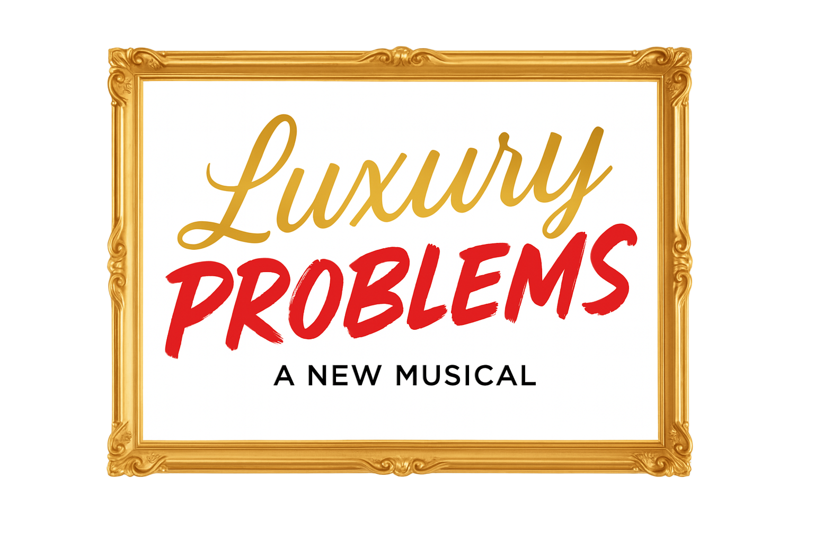

Tuner Entertainment
A New York producing company building new work for the stage.
Current Work

Luxury Problems
A Park Avenue mother losing the plot. A doorman facing a moral crossroads. An assistant who's already three steps ahead. One benefit gala where it all collides.
- Book, Music & Lyrics
- Charley Raiff
- Director
- Daniel Goldstein
- Music Supervision
- Matthew Berzon
- General Management
- LDK Productions
Twenty original songs. A completed 29-hour reading at CAM Studios, February 2026. Cast concept album in production. Off-Broadway workshop targeted for fall 2026.
About
Tuner Entertainment
Tuner Entertainment is the producing umbrella for the work of Charley Raiff — composer, lyricist, book writer, and producer.
Developed new work under Stew on The Total Bent at The Public Theater. Production collaborations with Nick Littlemore (Empire of the Sun, Pnau) and Jon Batiste. Co-creator of the viral musical satire No Cap on Israel. Performance credits include the Met Gala. Trained at Berklee and The New School.
Music
Tuner Music
Tuner Music is the commercial music practice within Tuner Entertainment — original composition, scoring, and music production for brands, artists, and content.